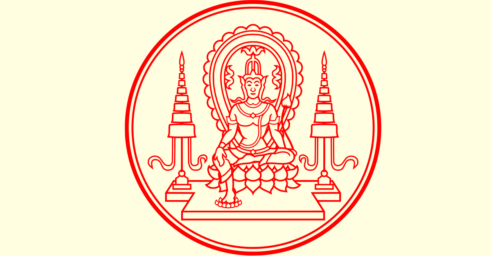

พระบาทสมเด็จพระปรเมนทรมหาอานันทมหิดล มีพระนามเดิมว่า พระวรวงศ์เธอ
พระองค์เจ้าอานันทมหิดล ทรงพระราชสมภพ เมื่อวันอาทิตย์ที่ 20 กันยายน พ.ศ. 2468 ตรงกับวันขึ้น 3 คํ่า เดือน
11 ปีฉลู ณ เมืองไฮเดลแบร์ก ประเทศเยอรมันนี ทรงเป็นพระราชโอรสองค์ที่ 2
ของสมเด็จพระราชบิดาเจ้าฟ้ามหิดลอดุลยเดช กรมหลวงสงขลานครินทร์ และสมเด็จพระราชชนนีศรีสังวาลย์
ทรงมีพระพี่นางและพระอนุชาร่วมสมเด็จพระราชบิดาและสมเด็จพระราชชนนีเดียวกันคือ
1. สมเด็จพระเจ้าพี่นางเธอ เจ้าฟ้ากัลยาณิวัฒนา
2. สมเด็จพระเจ้าน้องยาเธอ เจ้าฟ้าภูมิพลอดุลยเดช
พ.ศ. 2472 สมเด็จพระราชบิดา เจ้าฟ้ามหิดลอดุลยเดชกรมหลวงสงขลานครินทร์เสด็จทิวงคต
พ.ศ. 2474 พระองค์ได้เสด็จไปทรงศึกษาที่โรงเรียนมาแตร์เดอี ถนนเพลินจิต
พ.ศ. 2476 เสด็จพระราชดําเนินไปทวีปยุโรป ประทับ ณ เมืองโลซานน์ประเทศสวิสเซอร์แลนด์
พ.ศ. 2477 ทรงเสด็จขึ้นครองราชย์ เมื่อวันที่ 2 มีนาคม พ.ศ. 2477 เนื่องจากพระบาทสมเด็จพระปกเกล้าเจ้าอยู่หัว ไม่มีพระราชโอรสและพระราชธิดาที่จะสืบราชสันตติวงศ์ และด้วยความเห็นชอบของผู้สําเร็จราชการแผ่นดินที่ได้ดําเนินการไปตามกฎมณเฑียรบาล
พ.ศ. 2481 พระบาทสมเด็จพระเจ้าอยู่หัวอานันทมหิดล ได้เสด็จพระราชดําเนินกลับเยี่ยมประเทศไทยพร้อมด้วยสมเด็จพระชนนี สมเด็จพระพี่นางเธอและสมเด็จพระเจ้าน้องเธอ ได้ทรงประประทับอยู่ที่พระตําหนักจิตรลดารโหฐานประมาณ 2 เดือน จึงเสด็จไปประเทศสวิสเซอร์แลนด์ เพื่อเข้าศึกษาวิชานิติศาสตร์ และการปกครองในมหาวิทยาลัยประเทศนั้น
พ.ศ. 2488 วันที่ 20 กันยายน พ.ศ. 2488 พระองค์ทรงบรรลุนิติภาวะ จึงเสด็จกลับมาถึงประเทศไทยอีกครั้งหนึ่ง และในวันที่ 5 ธันวาคม พ.ศ. 2488 ได้ทรงประทับอยู่ ณ พระที่นั่งบรมพิมานในพระบรมมหาราชวังผู้สําเร็จราชการแทนคนล่าสุดคือ นายปรีดี พนมยงค์ ได้ถวายพระราชภารกิจแด่พระองค์เพื่อได้ทรงบริหารเต็มที่ตามพระราชอํานาจ
รัฐบาลไทย ซึ่งขณะนั้น นายพลตรีพิบูลสงครามนายกรัฐมนตรีมีความเห็นว่า เราควรจะเรียกร้องเอาดินแดนคืนมาจากฝรั่งเศส ขณะนั้นฝรั่งเศสกําลังทําสงครามกับเยอรมัน ประชาชนไทยพากันเดินขบวนเรียกร้องเอาดินแดนคืนเมื่อวันที่ 2 กันยายน พ.ศ. 2483
พ.ศ. 2483 สงครามไทยกับฝรั่งเศสจึงเกิดขึ้นในวันที่ 29 กันยายน กองทัพฝรั่งเศสในอินโดจีน แตกพ่ายยับเยินในที่สุดสงครามอินโดจีนก็ยุติลงด้วยการไกล่เกลี่ยของรัฐบาลญี่ปุ่น เมื่อวันที่ 20 มกราคม พ.ศ. 2484 ได้มีการประชุมตกลงกันที่กรุงโตเกียว ประเทศญี่ปุ่น เมื่อวันที่ 6 กุมภาพันธ์ พ.ศ. 2484 ฝรั่งเศสยอมคืนดินแดนให้ไทย คือด้านหลวงพระบางฝั่งขวาของแม่นํ้าโขง ที่นครจําปาศักดิ์ กับท่าสามเหลี่ยมฝั่งขวา มีอาณาเขตทางด้านมณฑลบูรพาบางส่วนมีเมืองศรีโสภณ มงคลบุรี และพระตะบอง
วันที่ 8 ธันวาคม พ.ศ. 2484 ญี่ปุ่นส่งทหารเข้ามาบีบบังคับไทยเข้าร่วมทําสงครามมหาเอเซียบูรพากับญี่ปุ่น
พระองค์ทรงเสด็จสวรรคต ณ พระที่นั่งบรมพิมานในบริเวณพระบรมมหาราชวัง วันที่ 9 มิถุนายน พ.ศ. 2489 เวลาประมาณ 9.00 นาฬิกา พระองค์ท่านเสด็จสวรรคตโดยพระแสงปืน สิริพระชนมายุ 20 พรรษา 8 เดือน 20 วัน ทรงดํารงอยู่ในราชสมบัติ 12 ปี เป็นการสูญเสียครั้งสําคัญของไทยครั้งหนึ่ง
เป็นรูปพระโพธิสัตว์ประทับ บนบัลลังก์ดอกบัว พระบาทขวาห้อย อยู่เหนือบัวบานอันหมายถึง แผ่นดิน พระหัตถ์ซ้ายถือดอกบัวตูม มีเรือนแก้ว อยู่ด้านหลังแถบรัศมี มีฉัตรอยู่สองข้าง เป็นพระราชสัญลักษณ์ของพระบรม นามาภิไธยว่า "อานันทมหิดล" แปลว่า เป็นที่ยินดีของแผ่นดินประหนึ่งพระโพธิสัตว์เสด็จมาประทานความร่มเย็นเป็นสุข แด่ประชาราษฎรทั้งปวง
พระราชลัญจกรประจำรัชกาลที่ ๘